著者: lpre_ys 最終更新日: 2026.06.29
この記事を読んでいる人へ
この記事の URL をあなたの Claude に渡して「似たようなことやりたい」と伝えれば、同じような自動化を一緒に設計してもらえると思います。
自分の PC スペックで動くかどうか、必要なアプリ・ツールが揃っているかどうかも、Claude に確認してもらってください。
作業配信をやっている。目的はあくまで「自分の作業を進めること」で、配信はそのついで、みたいなスタイル。
そうなると、配信後の編集作業に時間をかけたくないという気持ちが強くなる。概要欄のチャプターを手で書いたり、サムネイルを毎回 Photoshop で作ったり、切り抜きを切って字幕を付けてショートに変換したり、それらを全部手動でやっていたら本末転倒になってしまう。
なので、Claude Code（CLI）にほとんど任せることにした。主に任せているのは以下の3つ。
Claude Code は画像や動画といったバイナリデータを直接生成したり、普通の GUI アプリを操作したりすることは（基本的には）できないが、CLI コマンドなら自由に使える。
つまり、CLI コマンドで環境さえ整えておけば、Claude にも画像や動画を作ることができ、それらのタスクを任せることが可能になる。
| ツール | 用途 |
|---|---|
| ffmpeg | 動画の圧縮・切り出し・合成全般 |
| WhisperX | 文字起こし（faster-whisper バックエンド） |
| ImageMagick | サムネイル・テロップ画像の生成 |
前提条件: Claude Code は有料プランが必要（Pro 以上）。WhisperX は GPU（CUDA 対応）が必須。
ImageMagick
は使い込むほどノウハウが溜まっていく系のツール。コマンドの書き方や効果の使い方を
docs/ 以下にドキュメントとして保存してあって、Claude Code
はそれを参照しながら作業する。毎回ゼロから調べさせる必要がない。
生成した画像を Claude Code
自身が確認するとき、大きいサイズの画像をそのまま読み込むとトークンを大量に消費してしまう。そのため長辺が1000px
を超える画像は確認用に縮小してからチェックするルールにしている。このリサイズには専用スクリプト（check-image.sh）を使っていて、元ファイルには影響しない。
WhisperX は Python の venv で独立管理している。中身は
faster-whisper（CTranslate2
ベースの高速推論ライブラリ）と
whisperx（単語レベルのアライメント用）の組み合わせで、モデルは
large-v3 を使っている。GPU が必須で、CUDA 対応の PyTorch
も一緒に入れる必要がある。
この環境構築も Claude Code にやってもらった。「日本語の動画を文字起こしするスクリプトを作って、必要なライブラリも入れて」と伝えれば、venv の作成からライブラリのインストール、スクリプトの実装まで一通りやってくれる。
配信が終わったら /post-stream
というスキルを呼ぶだけで、YouTube
公開に必要な素材が全部揃う。録画圧縮と文字起こしに時間がかかるため、全部終わるまで数時間の待ちが発生する。その間に他の作業をしていればいい。
OBS で録画した MKV を ffmpeg で mp4 に変換する。コーデックは libx264、CRF25。1時間47分の 1080p 録画で 7.6GB → 793MB（約90%減） になった。エンコードは実時間の半分くらいで、1時間47分の録画で1時間前後かかった。
WhisperX で全編のトランスクリプトを生成する。後続の処理全部の土台になる。
文字起こしを Claude に読ませて、Markdown 形式のまとめを生成する。何の話をしたか・どんな進捗があったかをざっくりまとめてくれる。サムネイルのシーン選定にも使う。
サマリーと一緒に「公開前チェックリスト」も出してくれる。要するにトランスクリプトを読んで「これ大丈夫か？」と思った箇所をリストアップしてくれる機能で、実際にこんな内容が出てきた：
00:14:23「エロゲ」という単語が出てくる — 文脈は絵の塗りスタイルの変遷話でセーフだと思うけど、YouTube審査で引っかかる可能性は念のため意識して01:07:42モザイク前の映像 — ゲームのシナリオにモザイクをかける前に一瞬画面が映っているが、ネタバレレベルは軽微と判断01:08:52イラストのサインが画面に残っている — キャラのケープ横に署名があることに本人が気づいて発言している
1時間以上の配信を全部聞いて、タイムスタンプ付きでこのレベルの拾い方をしてくれる。
OBS 側に scene_logger.lua という Lua
スクリプトを仕込んでいる。録画中のシーン切り替えタイムスタンプを自動でログに書き出してくれるもの。「シーン切り替えのタイムスタンプを記録して
logs フォルダに保存するスクリプト書いて」と Claude Code
に言ったら書いてくれたやつで、OBS の ツール > スクリプト
から追加するだけで動く。
このログと文字起こしを組み合わせて、YouTube 概要欄に貼るチャプターを自動生成する。実際の出力はこんな感じ：
▼chapter
0:00 準備
4:09 【お絵かき】キャラクターの目の塗り込み
45:19 休憩・Claude Codeワークフロー紹介
50:55 【ゲーム制作】食堂イベントシーン実装
1:08:12 テストプレイ（デバッグ・修正繰り返し）
1:44:43 おわりシーンログとトランスクリプトを照合して、「この時間帯はtktk（実装）とテストプレイが細かく交互に繰り返されてるから1チャプターにまとめる」みたいな判断もしてくれる。
ここが /post-stream
の中で一番のキモ。実際の制作の流れを追ってみる。
Claude がサマリーと文字起こしを読んで「サムネイルに向いていそうなシーン」を5箇所選ぶ。今日の配信だと：
お絵かき（目の塗り込み中盤）/ お絵かき（ほぼ完成した目）/ Claude Code紹介シーン / ゲーム制作（RPGツクールエディタ）/ テストプレイ中
と選んできた。ffmpeg に付属する ffprobe で明るさを解析して暗い画面が映っていないかを確認し、ダメなら別タイムスタンプで撮り直す。テキストの内容・色・位置も Claude が決める。文言のトーン指針として「釣りっぽいキャッチコピーは使わない」「動詞・助動詞で終わる話しかけるような文体にする」というルールを設けてあって、それに沿って書いてくれる。
ImageMagick で4パス描画して5パターンの仮版を生成した結果がこれ：
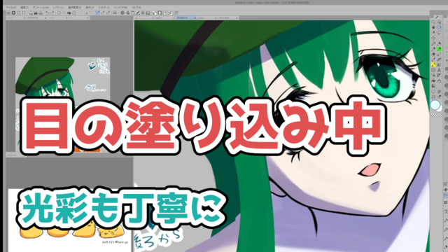
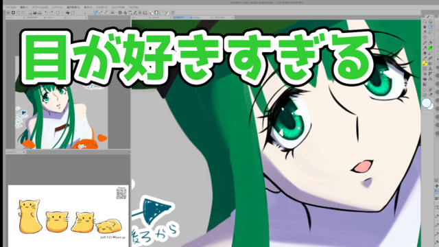
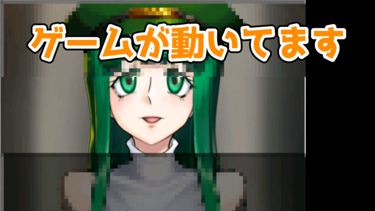
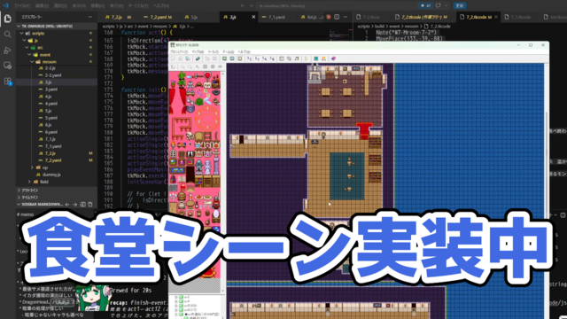
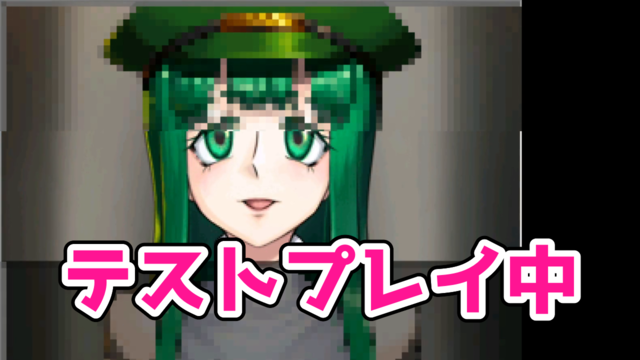
ここで自分がやることは「どのシーンを使うか」を決めるだけ。今回は A（お絵かき中のキャラ顔）で行くことにした。
A を選んだ後、文言とレイアウトを詰める。変更を伝えるたびに上書きせず別名で保存してもらった。
最初の生成（A_eye.png）：
「上のテキストを North
にして。文言を『目の描きこみ!!/虹彩フェチです』に」と伝えて修正（A_eye2.png）：
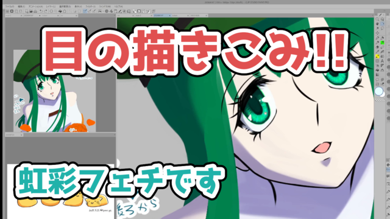
「上テキストを左寄せに（向かって右の眼がテキストに隠れてるのが気になって）」（A_eye3.png）：
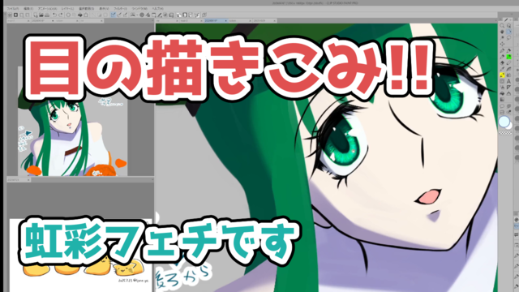
「上下のテキストを入れ替えて、下が大きい文字に。2行目は South
にしっかり寄せて。上を『虹彩フェチによる』に」（A_eye5.png）：
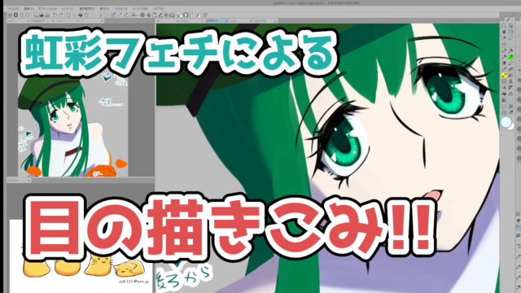
レイアウトが確定したらフェーズ2。同じベースから効果を変えたバリエーションを5個生成する。
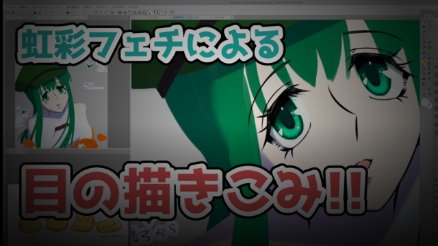
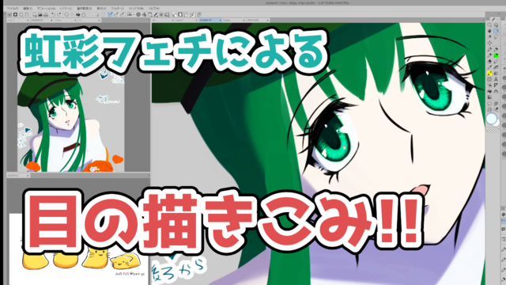
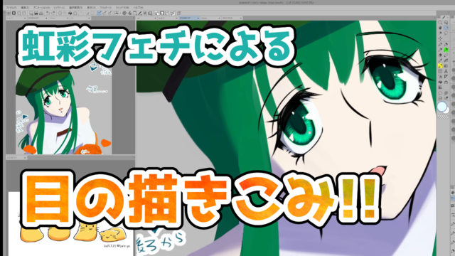
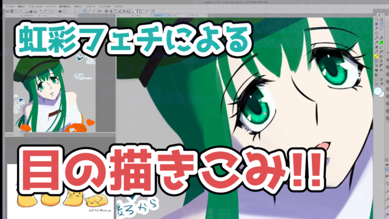
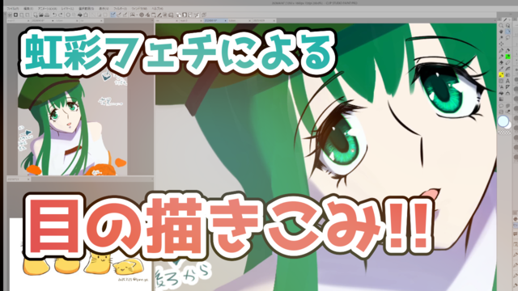
「var2ベースでメインテキストにグラデかけてみて」と追加依頼して出てきた var6（ゴールド→深紅グラデ）：
ここで「ちょっと目が滑るんだけど、白フチとのコントラスト比大丈夫？」と聞いたら、Claude が各色のコントラスト比を計算して問題を特定してくれた：
- 上テキスト #20B2AA（teal）: 約 2.5:1 ← NG
- 下テキスト上部 #FFB300（ゴールド）: 約 1.8:1 ← かなりNG
- 下テキスト下部 #CC2200（深紅）: 約 5.5:1 ← OK
「細い色フチを追加するやつ、前にやったよね？あれやろう」と伝えて、Material Design 900系の色でフチを追加したのが var8：
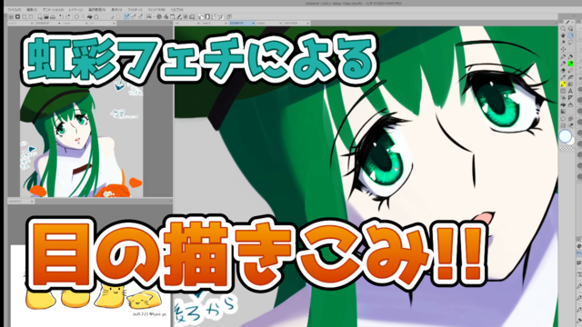
これで確定。コマンドと文言をログに残して終了。
確定版：
処理の説明の前に、字幕の仕組みを簡単に。
WhisperX が出力するのは SRT というフォーマット。「何秒から何秒にどのセリフ」というタイムスタンプ付きのテキストで、自分が読んで誤字を直したりするのもこのファイル。
これをそのまま映像に焼くのではなく、一度 ASS (Advanced SubStation Alpha) というフォーマットに変換してから ffmpeg に食わせる。ASS はフォント・サイズ・色・フチ・ブラーなどを行ごとに細かく指定できるフォーマットで、Claude Code が SRT の内容を読んでスタイルを当てはめた ASS を生成し、ffmpeg がそれを映像に焼き込む。
人間が編集するのは SRT だけで、ASS は自動生成される中間ファイル、というイメージ。
切り抜きもショートも、大まかな流れは同じ。
/suggest-clips
で文字起こしを読ませ、切り抜き向きのシーンをタイムスタンプ付きで提案させる/suggest-clips
の出力はこんな感じ。知見系・エンタメ系に分類して、自信度と理由付きで出してくれる：
### 8. 「心の中の理性的な部分」vs「感情的な部分」線の書き直しを止められない - 自信度: ★★★ - おすすめ範囲: 00:06:01〜00:07:12 - 概要: 自由変形で線がボロボロになってしまうが縮小したらわからない。でも気になって書き直してしまう。「心の中の理性的な部分はいつも先行けよと言うんですけど、感情的な部分が直すんじゃって言って」という独り言。 - チョイスした理由: 「理性vs感情」という構造が面白く、テンポよく展開する絵描きあるある。共感度が高い。
タイムスタンプが付いているので、そのまま /make-short や
/make-clip
の引数に渡せる。提案数は特に制限していなくて、気になるものは全部挙げてもらうようにしている。今回は12件出てきた。
ただしタイムスタンプの精度は、post-stream時の WhisperX の出来次第でブレることがある。時間に余裕があるなら、アーカイブを見直して正確な範囲を自分で確認してから指定した方がいい。急いでいるときは「前後1分くらい長めに切り取って、SRTを確認してから必要な箇所だけカットして」と伝えれば、Claude Code 側で調整してくれる。
字幕の焼き込みは render.sh
というシェルスクリプトを経由するようにしている。処理を直接コマンドで実行させるのではなくスクリプト化しておくことで、2つのメリットがある。
render.sh
を叩き直せば再レンダーできる — 誤字修正だけなら手元で SRT
を直してスクリプトを再実行するだけrender.sh（とそこから呼ぶスクリプト）を修正してもらえばいいので、作業を中断してから再開しても状態を追いやすい横型のまま公開する切り抜きは、字幕焼き込みまでで本編は完成。
サムネイルは Claude が SRT を読んで「一番インパクトのあるタイミング」のセリフを1行選び、そのフレームをスクリーンショットとして保存する。オチのネタバレになる行や最後の行は避けつつ、「見た瞬間に気になる」引きのあるシーンを選んでくれる。
/make-short で縦型（9:16 / 1080×1920）に変換する。
縦型変換には2種類ある。ゲーム制作・作業画面には blur（上下をぼかして黒帯なしでキャンバスを埋める）、お絵描きには crop（画面を拡大してクロップ）を使い分けている。どちらにするかはシーンログから Claude Code が提案して、自分が確認してから確定する。
テロップ文言やフックのコピーも Claude に考えさせている。動画を確認した後で「ここをこう変えてほしい」と伝えれば、その都度レイアウトや文言を調整してもらえる。
通常版（/make-clip・/make-short）は、SRT
修正・フック選定・テロップ確認などのタイミングでチェックポイントがある。Claude
Code と一緒に進めるスタイル。
自動版（/make-clip-auto・/make-short-auto）は、判断が必要な箇所もすべて
Claude
に委ねて一旦作り切ってもらうスタイル。暇があるときは通常版で一緒に進めて、時間がなかったり寝ている間に処理を回したいときは自動版を使う。
自動生成でそのまま採用できる品質のものはまだ出てこないので、Claude Code の処理後に自分がチェックして修正点を伝えるフェーズは必ずある。ショート程度の長さで、最短30分・長くて数時間程度の工数がかかっている。それでも、全部自力でやれば数日かかるのは間違いないので、省力化の効果は大きい。
ネタ発掘で挙げたエンタメ系8番を、/make-short-auto
でショートにした。コマンドに「20260626 suggest-clipsのエンタメ系8番で作って」と添えるだけで、以降は
Claude Code が一気に処理する。
自動で判断・処理した内容：
crop
スタイルを自動選択（crop=608:1080:656:0）CANVAS_H=600 で自動修正（310px に）無音カット後 61s。フックとエンドカードを足して完成品は 67.88 秒。60 秒を超えているが、Opus が「問題提起 → 自虐 → 理性 vs 感情のオチが一連で完結していてカットしたくない」と判断した結果。
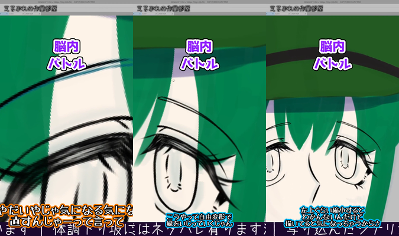
左: フック（「直すんじゃーって言って」） / 中: 字幕入り本編序盤 / 右: 本編中盤これが初稿の完成品（2.2MB・画質ダウン版）：
自動版でそのまま採用できる品質のものが一発で出ることはまずない。動画を確認して、気になる点を修正指示として伝えるフェーズが必ずある。review.md
に自動選択の根拠・誤認識候補・要確認事項がまとまっているので、それを見ながらチェックする。
今回の修正の流れ：
また、作業中に transcribe.py
の直接呼び出しで毎回承認ダイアログが出ることが判明した。「ラッパーシェル
transcribe.sh を作って、それを allow
リストに入れるのはどう？」と提案したらすぐ対応してくれた。こういう「作業中に気づいた環境改善」をその場でやってもらえる点も便利なところ。
確定したテロップ（3色・横幅いっぱい）：
画像上部の余白は、ショート動画のサムネイルは上端が切れる可能性があるため、テロップが見切れないよう安全マージンとして設定している。
テロップなど、ASS で表現しきれない文字は ImageMagick で PNG を生成してから映像に合成している。今回は使っていないが、文字色をグラデーションにするなども可能。
修正後の最終版（59.6秒）：
/goal
と組み合わせると、複数件の切り抜き・ショートを一気に処理できる。作業用のリストファイルを用意して「このリストを上から順に
/make-clip-auto
に流して。処理が終わったらチェックマークを付けて」という進め方にするとうまくいく。ただし本数が増えるとその分チェック工数も増えるので注意。
スキルとして定義しているものはこんなところ。
スキル化していない細かいタスク、たとえば「この概要欄の文章をもう少し整えて」とか「このログ見て今週の傾向を教えて」みたいなことも、その都度そのまま押し付けている。
Claude Code がなければ、YouTube はアーカイブをとりあえず上げておくだけの場所になっていたと思う。サムネイルも概要欄も雑になって、切り抜きやショートを作る気にもなれなかったはず。
今後の課題は、切り抜き・ショートの初稿の精度や品質をもっと上げること。今は Claude Code の処理後に自分でチェック・修正するフェーズがまだ残っていて、そこの工数を下げていきたい。
この記事の URL を Claude に渡して「自分の環境でも似たようなことがしたい」と伝えれば、必要なツール・スペック・設計の相談に乗ってもらえます。